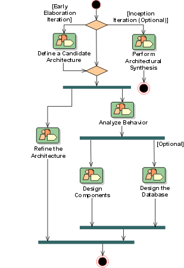

Analysis & Design:
Workflow



In the Inception Phase, analysis and design is concerned with establishing
whether the system as envisioned is feasible, and with assessing potential
technologies for the solution (in Perform
Architectural Synthesis). If it is felt that little risk attaches to the
development (because, for example, the domain is well understood, the system is
not novel, and so on) then this workflow detail may be omitted.
The early Elaboration Phase focuses on creating an initial architecture for
the system (Define a Candidate Architecture) to
provide a starting point for the main analysis work. If the architecture already
exists (either because it was produced in previous iterations, in previous
projects, or is obtained from an application framework), the focus of the work
changes to refining the architecture (Refine the
Architecture) and analyzing behavior and creating an initial set of elements
which provide the appropriate behavior (Analyze Behavior).
After the initial elements are identified, they are further refined. Design
Components produce a set of components which provide the appropriate behavior to satisfy
the requirements on the system. In parallel with these activities, persistence
issues are handled in Design the Database. The result
is an initial set of components which are further refined in Implementation.
Copyright
© 1987 - 2001 Rational Software Corporation
|  Disciplines >
Disciplines >
 Analysis & Design >
Analysis & Design >
 Workflow
Workflow